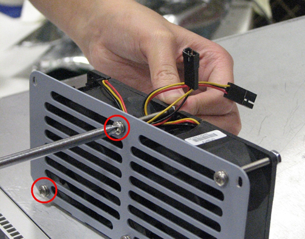

Operating Documentation
Direction 5670000, Rev# 1
Module Version 3.0, Version Date 8/19/08
Operating Documentation |
| ||||
| Possible personal injury or equipment damage! | ||||
| This unit could fall when using The hoist tool. | ||||
| Before putting weight on the hoist chain, be sure that the links are aligned properly. This will help keep the chain from binding up, or becoming kinked, which is nearly impossible to correct when the chain is under tension. |
| NOTE: | Open/Bad fuse indicates a catastrophic failure and fuses should not be replaced. Replace the SRPS. |
Perform the Lock Out / Tag Out procedure for the PEN Cabinet, LOTO for RF and PEN Cabinets and Magnet Room Electronics.
Remove the cables from the front of the SRPS. See Illustration 1.
Loosen the 8 thumb screws on the front of the SRPS. Screws are circled in white in Illustration 1.
Set up the Hoist Service Tool according the following procedure, Hoist Service Kit and Lifting Accessories.
Pull out the SRPS from the PEN Cabinet until the slide rails lock into position.
Remove the cables from the rear of the SRPS. See Illustration 3.
Attach a lifting bracket from the FRU container to each side of the SRPS. See Illustration 4.
Attach the spreader bar (hoist kit) to the lifting brackets; attach the spreader bar to the hoist chain. See Illustration 5.
Ratchet the winch to tighten the hoist chain.
Press the release tab and pull out the SRPS to release from the rail.
Release the PEN Cabinet outer slide rails and slide them back into the cabinet. See Illustration 6.
| NOTE: | You may want to use a screwdriver to release the outer slide rail. |
Lower the SRPS onto the FRU packaging platform for removal. See Illustration 7.
Loosen the hoist chain and remove the spreader bar.
Remove the lifting brackets.
Remove both slide rails from the SRPS.
Re-attach both slide rails to the new SRPS. See Illustration 8.
Re-attach both lifting brackets to the new SRPS. See Illustration 4.
Re-attach the spreader bar (hoist kit) to the lifting brackets; re-attach the spreader bar to the hoist chain. See Step .
Ratchet the winch to tighten the hoist chain and begin lifting the SRPS.
Slide out the PEN Cabinet slide rails a short distance to gauge how high to lift the module.
| ||||
| The slide rails for both the SRPS and PEN Cabinet must be aligned for proper insertion. Failure to take care may result in damage to roller bearings on the mounted slide rails. | ||||
Once the SRPS is aligned with the outer rails, finish pulling out each PEN Cabinet outer slide rail until each locks into position.
Re-attach the cables to the rear of the SRPS. See Illustration 3. Ensure that J51 and J52 are installed correctly.
Loosen the chain tension with the winch.
Remove the spreader bar from the lifting brackets.
Remove the lifting brackets.
Press the release tab on each rail and carefully slide the SRPS completely into the PEN Cabinet slide rails until they lock into position. See Illustration 5.
Tighten the eight (8) thumb screws on the front of the SRPS. See Illustration 1.
Refer to Finalization, Step 1for checkout and proper operations.
Perform LOTO for RF and PEN cabinets. See LOTO for RF and PEN Cabinets and Magnet Room Electronicsdocument for details.
If replacing fan 5 or 6, (shown in Illustration 9), see Replacing Front Fans for procedure. If replacing fan 1, 2, 3, or 4, (shown in Illustration 10), see Replacing Rear Fans for procedure.
Remove top 2 screws from fan cover. See Illustration 11.
Disconnect appropriate cable using quick release. If unable to access cable, first disconnect all cabling routed to the front of the SRPS. Then, remove top cover by sliding SRPS out of cabinet and removing 3 screws on each side. See Illustration 12.
Remove fan assembly from fan cover by removing 2 screws. Example shown in Illustration 13.
Illustration 13: Removing Fan Assembly

Install new fan.
Reconnect all cabling appropriately.
Replace all covers.
Restore power LOTO RF and PEN Cabinet
Check “Fault” light on SRPS, shown in Illustration 1, to verify that it is not lit.
Refer to Finalization, Step 2for checkout and proper operation.
Disconnect all cables routed to the front of SRPS. See Illustration 1.
Slide SRPS completely out of PEN Cabinet by removing 8 thumb screws circled in Illustration 1.
| NOTE: | If replacing fans 1, 2, 3, 4, use lifting fixture and remove the SRPS from the cabinet. Service access to fans is restricted with power supply just pulled out and left on the rails. Fan replacement is possible but difficult with power supply remaining on rails. |
Disconnect cable connections in the rear in order to access fans.
Remove top 2 screws from fan cover. See Illustration 11.
Disconnect appropriate cable using quick release. If unable to access cable, remove top cover by loosening screw on each side. See Illustration 14.
Remove fan assembly from fan cover by removing 2 screws. An example is shown in Illustration 13.
Install new fan.
Reconnect all cabling appropriately
Replace all covers.
Restore power, LOTO RF/PEN cabinets.
Check “Fault” light on SRPS, shown in Illustration 1, to verify that it is not lit.
Refer to Finalization, Step 2 for checkout and proper operation.
After SRPS Unit replacement, perform a quick scan to ensure proper functionality.
After fan replacement, check Host PC to verify that there is no longer a fan failure.